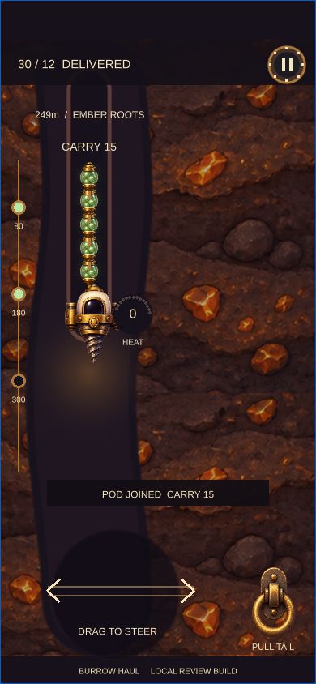

Drill Bunny
Dream Show Adventures · Steve Richey / Andrew Agulto
Borrowed
Automatic descent, lateral route choices, and cooling in open terrain.
Your fortune follows you.
Drill down with a train of valuable pods. Your tail remembers every bend—and one pod can buy a brief escape from danger.

Two specific mechanisms, combined into one player decision.
Dream Show Adventures · Steve Richey / Andrew Agulto
Automatic descent, lateral route choices, and cooling in open terrain.
ABA Games / Kenta Cho
Followers trace your path, increase value, and can be spent for survival.
Reference research captures · framed for clarity; click for full images. Source claims, credits & provenance ↗
The mutation changes what you must weigh up on each move.
Example: four pods and heat 80. A release cools 35 and protects the remaining train for 0.9 seconds.
Illustrative rule diagram · selectable comparison, not a game simulation.
Preserve the full haul and thread a cooling route. A snag can cut off the trailing pods.
Lose the last pod immediately. Take the protected crossing with a shorter train.
One portrait field. One short offline round. Immediate retry.
Attach visible pods
Keep the tail off the rocks
Cool naturally or spend a pod
Unload at 80 / 180 / 300 m
Design hypotheses to test with you; automated completion does not establish enjoyment.
Four pods bank 10; five bank 15. The growing tail is the prize.
Your nose clears a corner before the lagging cargo does.
Each lift turns a fragile haul into secured value.
Does sacrificing a pod feel like a useful choice rather than a forced tax?